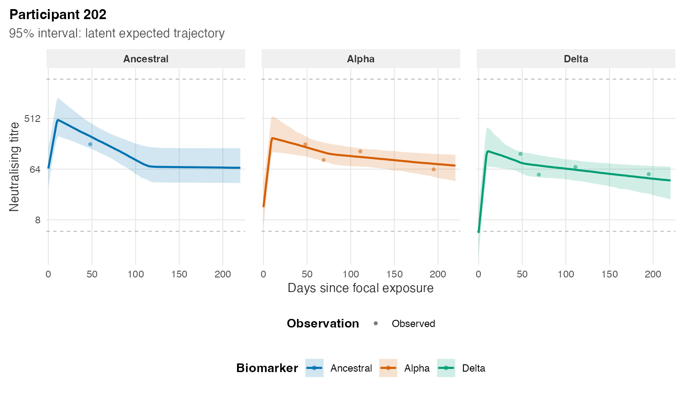

Individual predictions combine population kinetics, covariate effects, and a fitted participant’s posterior random effects. Original participant identifiers are retained throughout.
individual <- predict(
fit,
type = "individual",
participants = "202",
times = 0:220,
ndraws = 1000
)
plot_individual(individual, participant = "202")
Participant 202, the most repeatedly observed member of the deterministic raw-data display subset. Biomarkers retain their established colours but use separate facets to prevent overlapping trajectories. Points are measurements, lines are posterior median latent trajectories, and ribbons are pointwise 95% credible intervals.
The participant was selected using only the raw sampling design, not model fit quality. Faceting makes biomarker-specific fit easier to inspect without losing the colour, censoring, response-scale, or ordering conventions used in the population plot.
Select output deliberately
selected <- predict(
fit,
type = "individual",
participants = c("31", "94", "202"),
biomarkers = c("Ancestral", "Delta"),
times = seq(0, 180, by = 3),
ndraws = 500
)
plot(selected)Summary mode processes participants in bounded chunks, avoiding one
enormous draw × participant × biomarker × time table.
participants, biomarkers, times,
ndraws, and chunk_size give explicit control.
Unsummarised output is protected by max_rows; increase it
only after considering memory.
Prediction is performed in vectorised R code from posterior kinetic-parameter draws. This permits arbitrary post-fit time grids and avoids storing huge generated-quantity arrays during sampling. Package tests compare the R kinetic function numerically with the Stan implementation.
New participants and batch plots
type = "new" draws new effects from the fitted hierarchy
for supplied covariate profiles. It is different from reconstructing a
fitted person:
new_people <- predict(
fit,
type = "new",
newdata = data.frame(infection_history = "Infection naive"),
times = 0:180,
seed = 34
)For cohort review, compute one reusable prediction and save PNG files, individual PDFs, or one multi-page PDF:
all_individuals <- predict(
fit,
type = "individual",
times = 0:220,
ndraws = 500
)
save_individual_plots(
all_individuals,
path = "individual-plots",
format = "pdf",
multipage = TRUE
)The default band is uncertainty in the latent curve; request observation noise only when the estimand is a future measurement. Read Diagnostics before using individual reconstructions substantively.